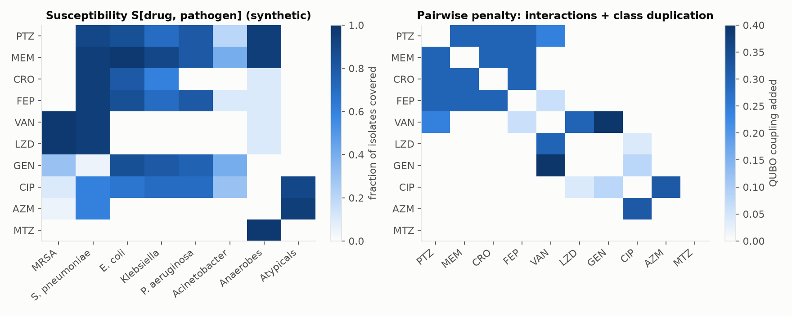
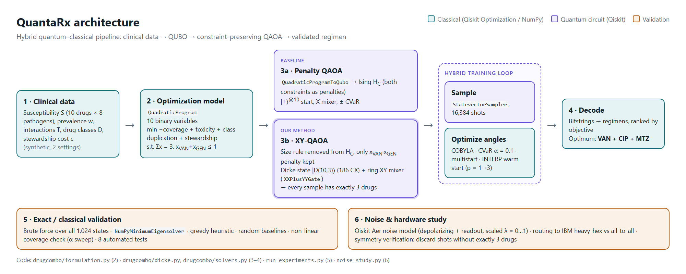
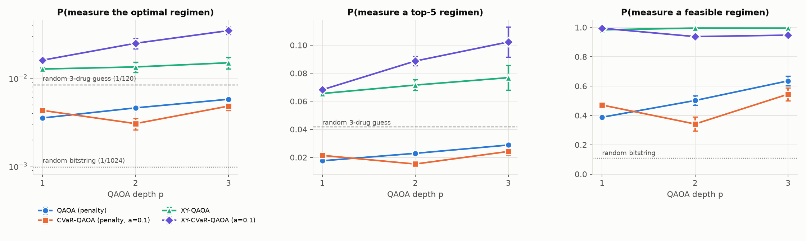
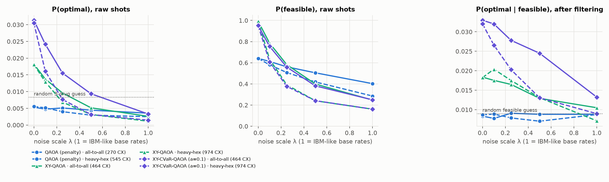

Motivation. When a patient arrives with severe sepsis, clinicians must start empiric antibiotics before lab results identify the pathogen. Every hour of delay raises mortality, so the regimen is chosen under uncertainty. A good combination of drugs should:
Intended users. Hospital antimicrobial-stewardship teams who write empiric-therapy guidelines for a ward or setting (ICU sepsis, community pneumonia). The problem is solved once per setting, not once per patient.
Why it is a real optimization problem. Coverage, redundancy and toxicity are all pairwise effects: a drug's value depends on which other drugs are in the regimen. The objective is therefore quadratic, and adding up independent scores fails. Even with 10 drugs, a greedy heuristic picks the wrong regimen (PTZ + LZD + GEN, rank 3) instead of the optimum (VAN + CIP + MTZ).
Decision variables. xd ∈ {0,1} for 10 drugs: piperacillin-tazobactam (PTZ), meropenem (MEM), ceftriaxone (CRO), cefepime (FEP), vancomycin (VAN), linezolid (LZD), gentamicin (GEN), ciprofloxacin (CIP), azithromycin (AZM), metronidazole (MTZ). This gives 10 qubits.
Data. Susceptibility Sdj (fraction of isolates of pathogen j killed by drug d), pathogen prevalence wj for each setting, interaction severity Tde, same-class indicator Dde, stewardship cost cd.
Coverage. True weighted coverage is non-linear: Σj wj[1 − Πd(1 − Sdj)xd]. Truncating inclusion–exclusion at second order gives covj(x) ≈ Σd Sdjxd − Σd<e SdjSejxdxe. The quadratic term is exactly the redundancy between two drugs that cover the same pathogen, and the approximation is a provable lower bound (Bonferroni inequality, checked in the tests).
| Constraint | Meaning | How it is handled |
|---|---|---|
| Σd xd = 3 | exactly three drugs | penalty P(Σx − 3)² in standard QAOA; enforced by the circuit itself in XY-QAOA |
| xVAN + xGEN ≤ 1 | at most one kidney-toxic drug | slack-free penalty P·xVANxGEN (no extra qubits) |
Test instance. 10 drugs × 8 pathogen groups, two prevalence settings (ICU sepsis; community-acquired pneumonia). There are 210 = 1,024 assignments, of which 112 are feasible, so every quantum result can be checked against the exact answer.


Why QAOA. Every interaction in the model is pairwise, so the problem is a native QUBO / Ising Hamiltonian HC. The cost unitary e−iγHC needs only RZ and RZZ gates, which makes QAOA the natural gate-model algorithm.
Our extension: constraint-preserving XY-QAOA. Standard QAOA searches all 1,024 bitstrings and relies on a large penalty to enforce "exactly three drugs". That penalty dominates the energy landscape and hides the clinically meaningful differences between regimens. Instead we:
XXPlusYYGate on neighbouring qubits). Each gate swaps one drug for another and never changes how many are selected.The circuit therefore never leaves the feasible subspace (leakage < 10−9 in tests). Only the small kidney-toxicity penalty remains in HC.
Training. CVaR aggregation (α = 0.1) optimises the best 10% of shots rather than the mean; INTERP warm starts initialise depth p+1 from the optimised depth-p angles; several random starts per depth; COBYLA as the classical optimiser; Hamiltonian normalised by √Σc² so the angle scale is instance-independent. Sampling uses the Qiskit 2 StatevectorSampler (16,384 shots) on a pre-transpiled ansatz.
| Method | Regimen | Objective |
|---|---|---|
| Brute force (all 1,024 states) | VAN + CIP + MTZ | −0.9228 |
NumPyMinimumEigensolver on the penalised QUBO | VAN + CIP + MTZ | same (penalty is valid) |
| Optimum of the exact non-linear coverage objective | VAN + CIP + MTZ | QUBO picks the right answer |
| Greedy heuristic | PTZ + LZD + GEN | −0.8899 (rank 3) |
The model makes clinically sensible trade-offs on its own: none of the top-10 regimens pairs vancomycin with piperacillin-tazobactam or combines two β-lactams, and the reserve agent meropenem first appears at rank 9.
| Method | P(optimal) | P(top-5) | P(feasible) | Approx. ratio* | CX |
|---|---|---|---|---|---|
| QAOA (penalty) | 0.0058 ± 0.0002 | 0.029 | 0.635 | 0.752 | 270 |
| CVaR-QAOA (penalty) | 0.0048 ± 0.0005 | 0.024 | 0.545 | 0.749 | 270 |
| XY-QAOA | 0.0149 ± 0.0022 | 0.077 | 0.995 | 0.871 | 498 |
| XY-CVaR-QAOA | 0.0346 ± 0.0034 | 0.102 | 0.947 | 0.769 | 498 |
| Random bitstring | 0.0010 | 0.005 | 0.109 | – | – |
| Random 3-drug regimen | 0.0083 | 0.042 | 0.933 | 0.747 | – |
*Expected normalised quality of the feasible samples (1 = optimal, 0 = worst feasible). Probabilities are exact Born probabilities at the trained angles.

Findings.
The trained depth-3 circuits were run on a noisy simulator: depolarising gate errors and readout error at roughly current IBM median rates (2-qubit 7.5×10−3, 1-qubit 2.5×10−4, readout 1.5×10−2), scaled by λ from 0 to 1, and routed onto both all-to-all connectivity and an IBM heavy-hex coupling map. Because a correct XY-QAOA circuit always outputs exactly three drugs, any shot with a different count is a detected error and is discarded (symmetry verification, at no extra quantum cost). At λ = 0, Aer reproduces the ideal result (0.031 vs 0.030).

| XY-CVaR-QAOA, p = 3 | CX | λ = 0 | 0.1 | 0.25 | 0.5 | 1 |
|---|---|---|---|---|---|---|
| all-to-all, after symmetry check | 464 | 0.033 | 0.032 | 0.028 | 0.024 | 0.013 |
| heavy-hex, after symmetry check | 974 | 0.032 | 0.027 | 0.020 | 0.013 | 0.009 |
| random feasible guess | – | 0.0089 | ||||
All randomness is seeded. The repository README gives setup steps for Windows and Linux/macOS. Main commands: python -m pytest -q tests (8 checks, about 30 s), python run_experiments.py --quick (demo, about 3 min), python run_experiments.py (full benchmark), python noise_study.py (noise study). Results and figures are committed in results/.